Project 3: Fun with Flow Models
Part A: Exploring the Power of Flow Models
Here I use a pretrained text-to-image flow model, PixNerd, to alter and create images in various different ways. For all runs: seed = 180, Euler step size = 0.02.
1.1 Constructing Noisy Training Inputs
The forward process simply linearly interpolates between noise (t = 0) and the clean image (t = 1). The three inputs use the same noise sample for the sake of comparison.
def interpolate(image, noise, t):
return (1-t)*noise + t * imagePhoto of two pizzas from Cheese Board Collective Pizzeria. Very good if you haven't tried it!
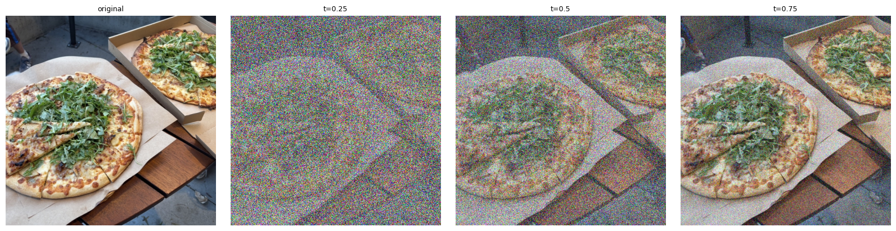
1.2 Classical Denoising
For the no-learning baseline denoising we divide by t to undo the image scaling. Then we blur after the previous step. I tested values σ = 1, 2, 4, 8, 16. The outputs are the tests that had the lowest MSE compared to the original photo.
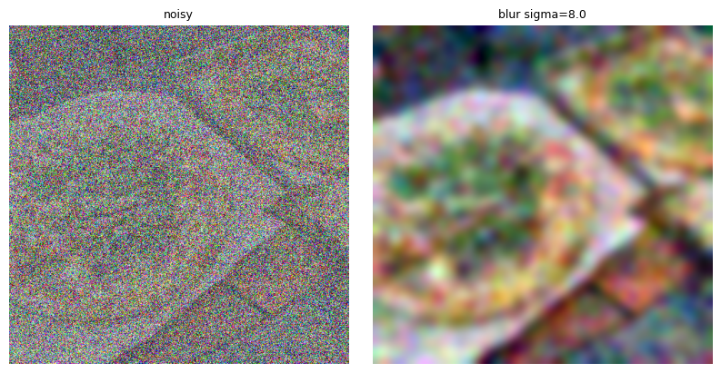
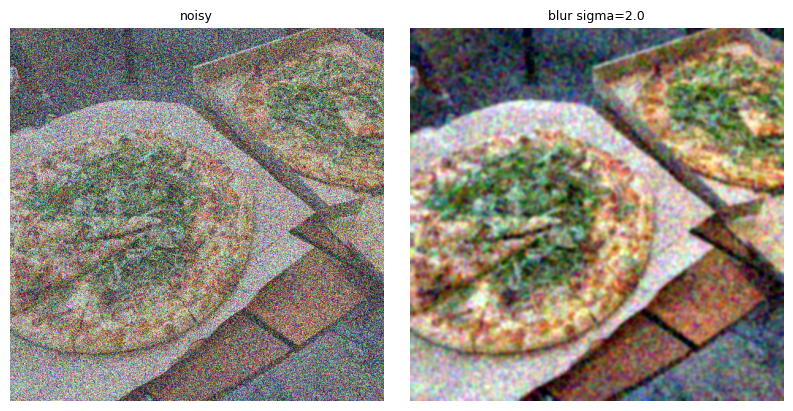
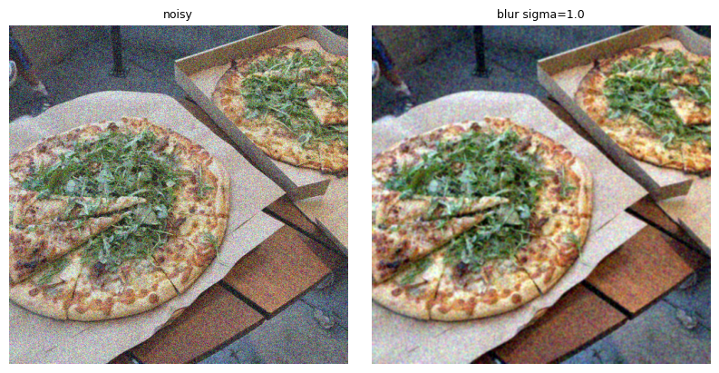
1.3 One-Step Denoising
Now we try using the pretrained model for the velocity, starting with one velocity prediction with "a high quality photo" and jumping to t = 1.
def one_step_denoise(x, t, condition, predict_velocity):
return x + (1-t)*predict_velocity(x, t, condition)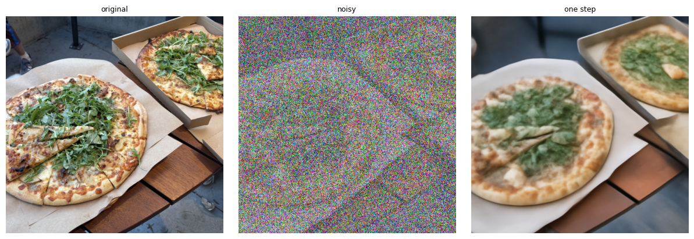
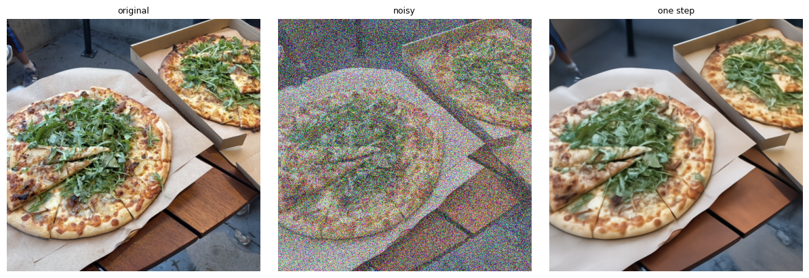
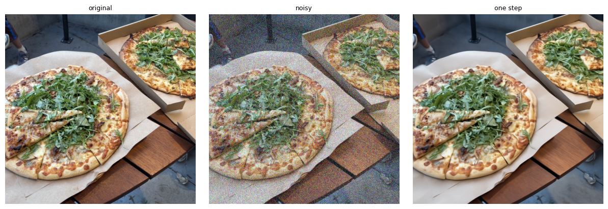
1.4 Visualizing Velocity
To see the effects, we can compare the update (1 − t)v̂ with the true applied update x1 − xt. By putting it into an RMS error map, we can see what was changed.
predicted_update = (1 - t) * predict_velocity(x_t, t, condition)
ground_truth_update = (1 - t) * (clean_image - epsilon)
error_map = ((predicted_update - ground_truth_update) ** 2).mean(dim=1)**0.5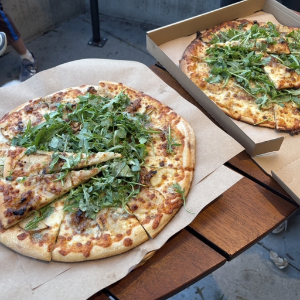
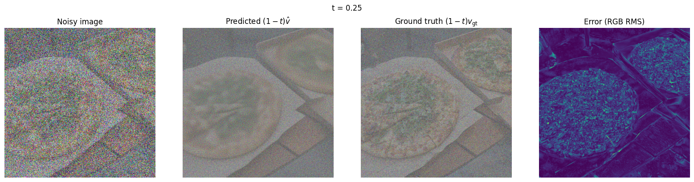
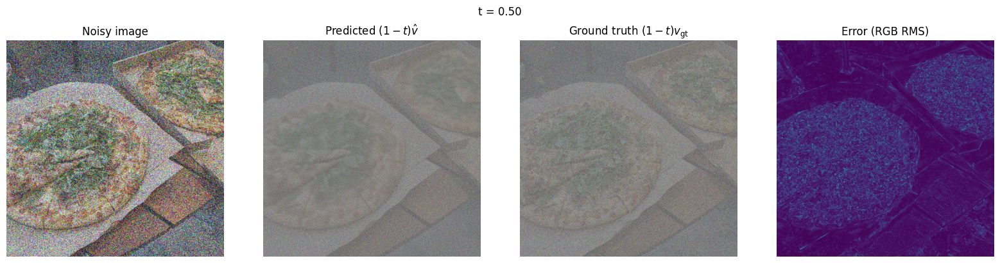
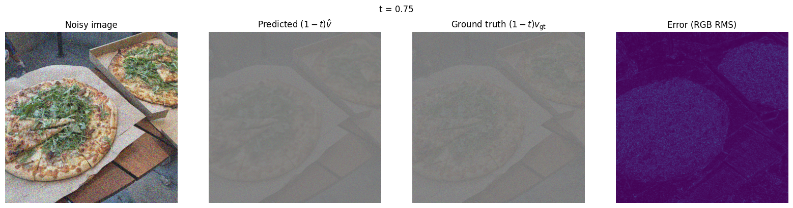
The large shapes are accurate, and we can see most of the error is in small textured parts. Specifically, the arugula creates a lot of shadows and highlights at a high frequency, making it hard to denoise.
1.5 Iterative Denoising with Euler Sampling
Now instead of jumping straight to the final predicted image, we can iteratively take steps from t = 0.50. At each step, we can recalculate the velocity with our model. In this run, it took 25 steps. There is some extra logic to make sure it stops exactly at t = 1 and does not overshoot.
@torch.inference_mode()
def euler_sample(x_start, t_start, step_size, velocity):
x, t = x_start, t_start
states = [(t, x)]
updateNum = 0
while t<1:
if t + step_size >= 1:
h = 1-t
else:
h = step_size
x = x+h*velocity(x, t)
t = t+h
updateNum += 1
if updateNum % 5 == 0 or t == 1:
states.append((t, x))
return x, states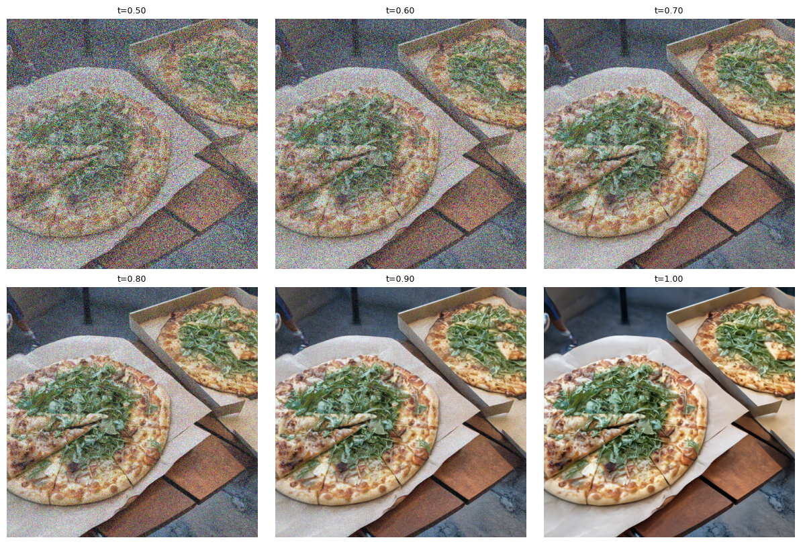
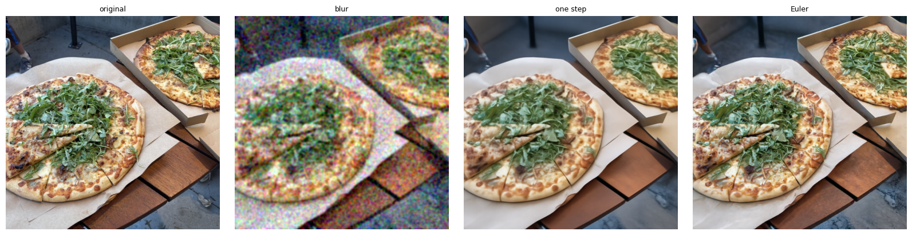
The Gaussian blur method clearly keeps a lot of the noise, and the one step method seems to smooth details making it not quite match the original. The Euler method is the only one that kept all of the detail. The one step actually had a lower MSE (0.017 vs. 0.020 for Euler) than the Euler method, however, MSE rewards a blurry average being more similar and not visual similarity.
1.6 Generating Images from Noise
Now we'll try starting from pure noise at t = 0. Now, our denoiser can be a generator!

Based on the outputs, it would seem the model was likely trained on many human portraits as without a specific prompt we get these outputs. In general, the outputs clearly have human features, but they look unnatural and trigger the uncanny valley reaction (where we as humans don't like things that look almost human, often used in horror genres).
2.1 Classifier-Free Guidance (CFG)
CFG pushes the output in the direction of the difference between the prompted and empty-prompt predictions, which would point more towards the prompt.
def cfg_velocity(x, t, condition, w, predict_velocity, null_condition=''):
v_c = predict_velocity(x, t, condition)
v_u = predict_velocity(x, t, null_condition)
return v_c+w*(v_c-v_u)
For comparison purposes, we used the same noise as the previous section, however, our outputs are much better and look more human-like. One difference is that this output has much less diversity in terms of poses and features (like hair color, facial hair, etc.)
3.1 Image-to-Image Editing
The following uses the SDEdit scheme where we noise a real image and let the model denoise in the direction of the prompt. The starting time controls how much of the original survives, as it meshes to the same "a high quality photo" prompt. I used tstart = 0.02, 0.04, 0.06, 0.10, 0.14, 0.25, 0.50.
def edit(image, noise, t_start, condition, predict_velocity, w=7, step_size=0.02):
def guided_velo(x, t):
return cfg_velocity(x, t, condition, w, predict_velocity)
x = interpolate(image, noise, t_start)
res, z = euler_sample(x, t_start, step_size, guided_velo)
return res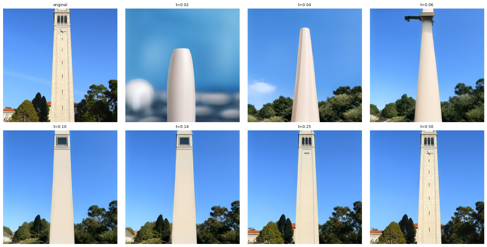
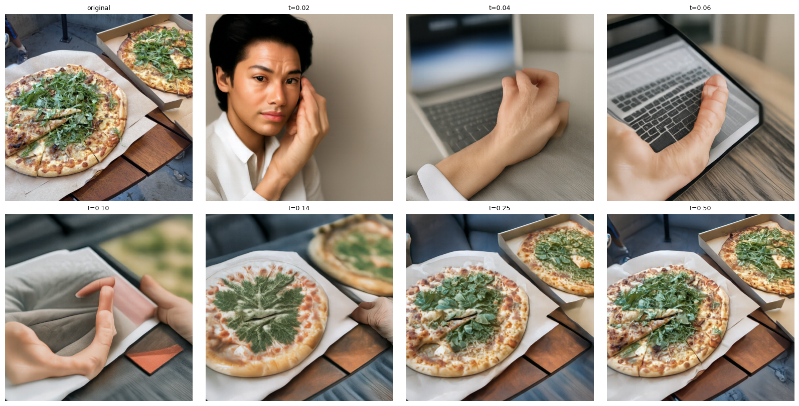
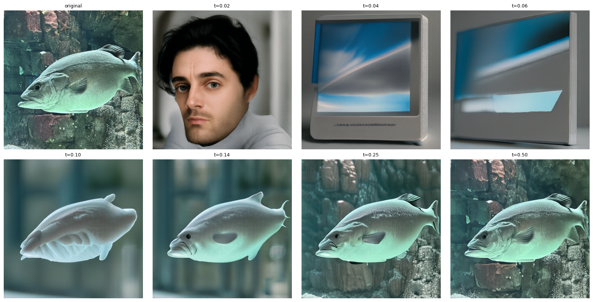
At the lowest starting times, the model once again generates human portraits. As seen in the tests, it then passes through devices and screens before the original pizza and fish return around t = 0.14–0.25. It's interesting to see where the fingers of a hand form like in the crust of the pizza and the body of the fish, since those are the hotspots of each image in terms of what the subject is. The Campanile's distinct shape and blue sky make the transition much more straightforward.
Editing Hand-Drawn and Web Images
Same procedure, but with an image from the web, and 2 hand drawn images.
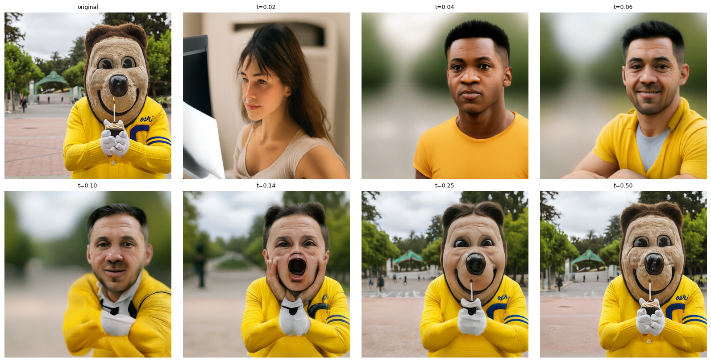
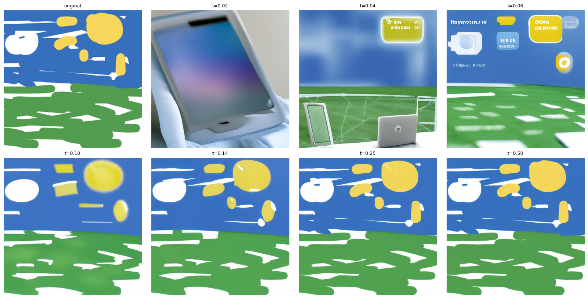
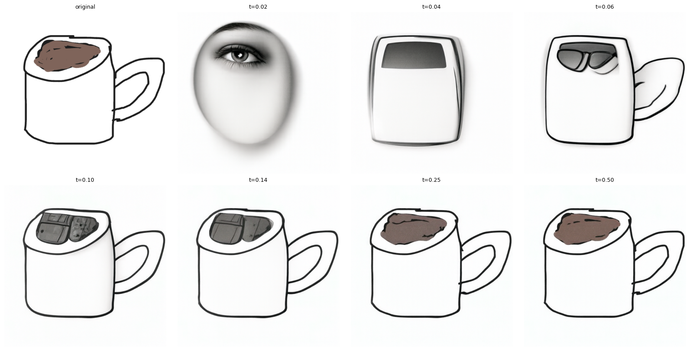
3.2 Text-Guided Image Editing
Now we try changing the "a high quality photo" prompt to a custom one.
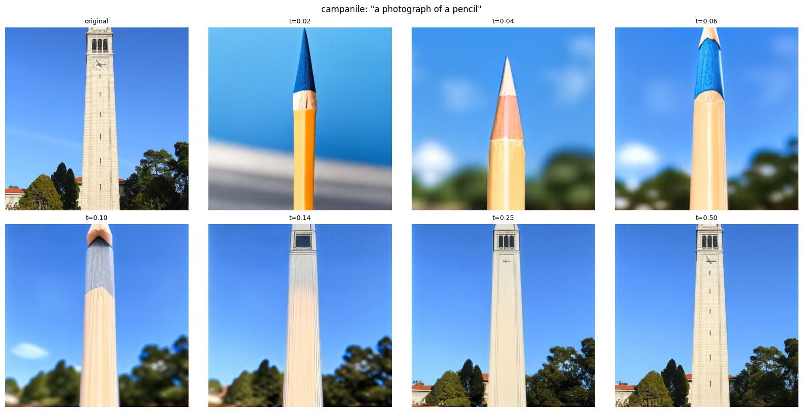
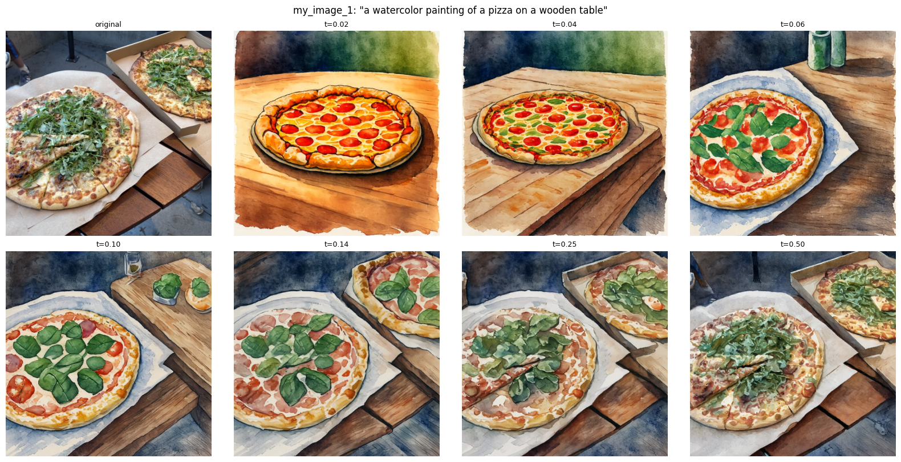
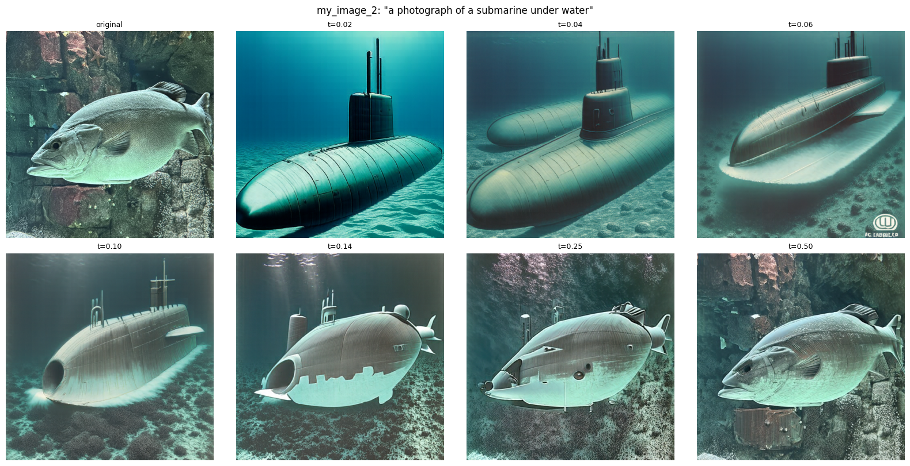
In general the best range seems to be around t = 0.06–0.14 as it keeps the original composition but does let the prompt manifest clearly. For the watercolor pizza, t = 0.14 and 0.25 give the best output: you can still tell the original composition, including the little slices on top of the pizza (at 0.25), while it's clearly a watercolor. For the fish and submarine, I like t = 0.14 best. You get the god rays you'd expect for a submarine in the ocean, with the light source inferred from the original fish image, and it keeps a cohesive fish shape while adding vessel-like elements.
3.3 Visual Anagrams
An anagram averages two velocities. First a velocity of an upright image with prompt A and then from the flipped image with prompt B. It computes both at every step and averages them to get both prompts to show in the final result.
def visual_anagrams(noise, condition_a, condition_b, predict_velocity, w=7, step_size=0.02):
def anagram_velo(x, t):
v_a = cfg_velocity(x, t, condition_a, w, predict_velocity)
v_b = rotate180(cfg_velocity(rotate180(x), t, condition_b, w , predict_velocity))
return (v_a+v_b) / 2
res, z = euler_sample(noise, 0, step_size, anagram_velo)
return res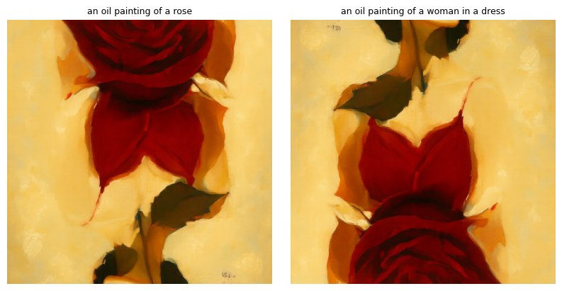
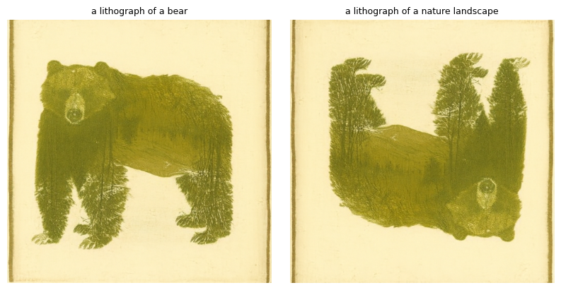
The image of the woman seemed to be isolated to the torso. This may have been due to dress being part of the prompt. The rose is clearly visible as well. The bear works nicely as the fur is a similar texture as the trees.
3.4 Hybrid Images
This section mimics Project 2 through having two images in one through using different frequencies. However, we mesh the two during sampling. Namely, we use the low frequencies of one prompt's velocity plus high frequencies of another's.
def make_hybrids(noise, condition_a, condition_b, predict_velocity, w=7, step_size=0.02):
def hybrid_velo(x, t):
v_a = cfg_velocity(x, t, condition_a, w, predict_velocity)
v_b = cfg_velocity(x, t, condition_b, w, predict_velocity)
return lowpass(v_a) + (v_b - lowpass(v_b))
res, z = euler_sample(noise, 0, step_size, hybrid_velo)
return res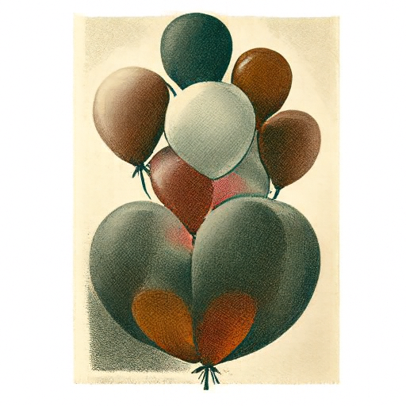
The butterfly has a body and wings with their respective colors when viewed from far away, while the flowers are present up close. For thematic cohesion, I tried to pick subjects that were related. The clown is a bit hard to see, but if you imagine a fully dressed-up clown with a collar and colored hair, it's visible, and I think it's a good output with the balloons up close. This section definitely took the longest, as it was hard to find prompts for the low frequencies to have a distinct enough shape to be identifiable.
Part B: Flow Matching from Scratch
Here I build and train my own flow-matching model on MNIST. There are two parts, 1) a denoising UNet 2) a digit generator.
1.1 Implementing the UNet
To create the denoiser from a UNet, we have the encoder downsample 28×28 → 14×14 → 7×7 → 1×1, and the decoder upsamples. Connections are concatenated at each resolution on the way back up. The entire UNet can be decomposed into simple operations as seen below.
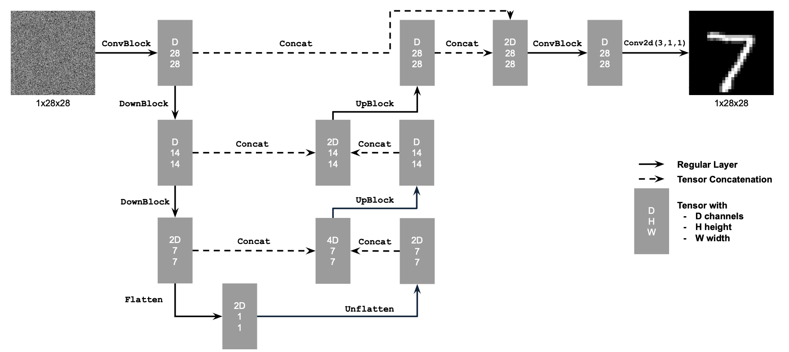
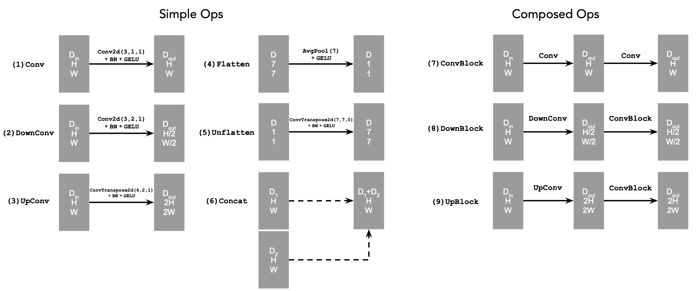
1.2 Using the UNet to Train a Denoiser
For reference, the training pairs are clean digits with an added Gaussian noise of strength σ:
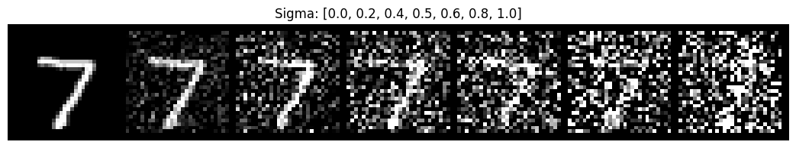
1.2.1 Training
Here I train on σ = 0.5 for 5 epochs (D = 128, Adam lr 1e-4, batch size 256). Fresh noise was used for every batch.
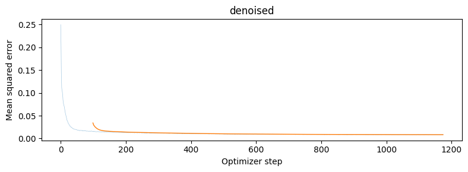
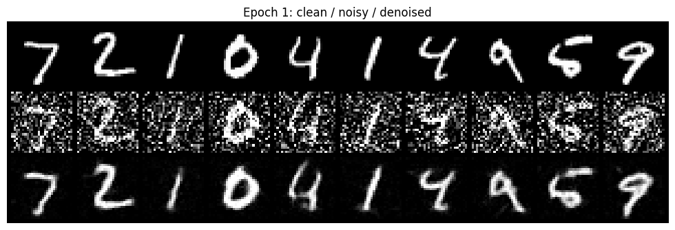
1.2.2 Out-of-Distribution Testing
After training on σ = 0.5, I tested noise levels that the model did not have in training:
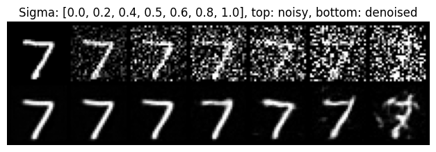
Noise strengths below 0.5 work completely fine for this model, and it holds up decently well until 0.8. At σ = 1.0 the 7 comes out messed up.
1.2.3 Denoising Pure Noise
Here I trained a UNet that only gets pure noise as input.
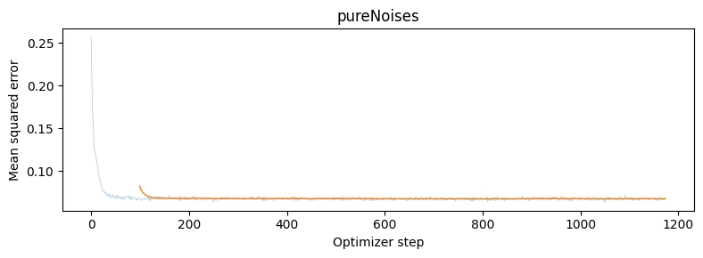
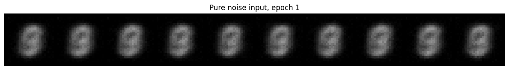
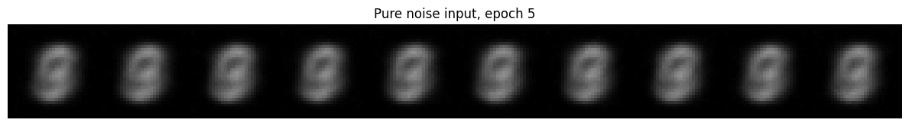
The output is just a gray blob every time. With the lack of direction from complete noise, the model can only predict the point that is the average of all the training data. This average output has more weight towards where numbers overlap, like the bottom right loop for 3, 5, 6, 8, and 9.
2.1 Adding Time Conditioning to UNet
We can add time (t) to the UNet so the flow model knows how far along the path from noise to image it is. Now we have two FCBlocks which embed t. The outputs work to scale the features at the bottleneck and the first up-block.
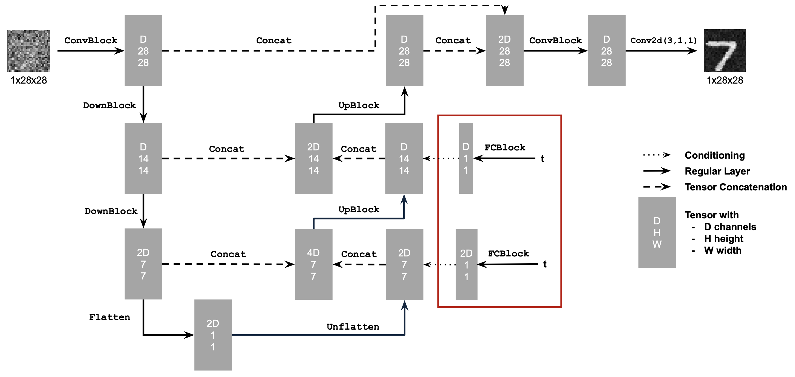
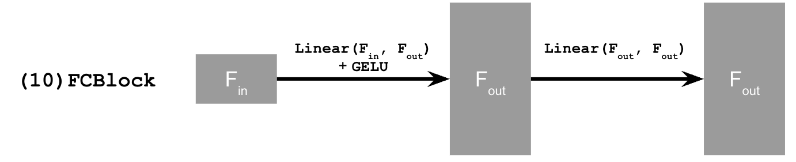
2.2 Training the UNet
In this section, we have the inputs as interpolations between noise and a digit at a random t. The target is the flow x1 − x0, similar to Part A. For this section, D = 64, batch size = 64, Adam starts at lr 1e-2, exponential decay (γ = 0.11/10), and with 10 epochs. To train the model, I used the following algorithm:
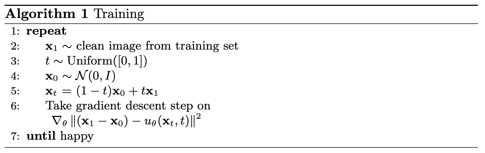
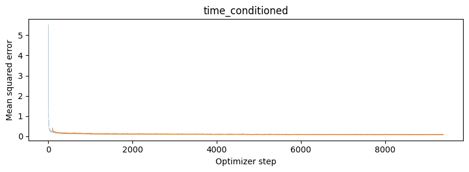
2.3 Sampling from the UNet
Now to generate a digit, we can start from pure noise again, and now follow the learned flow. This output took 50 Euler steps.
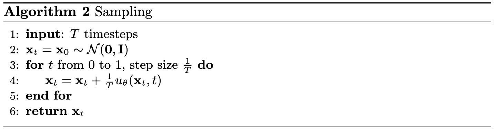
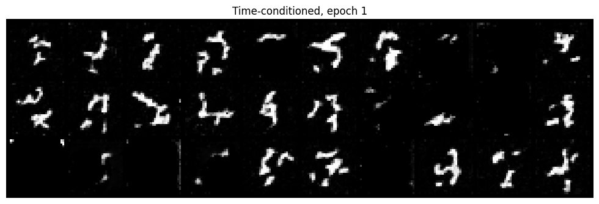
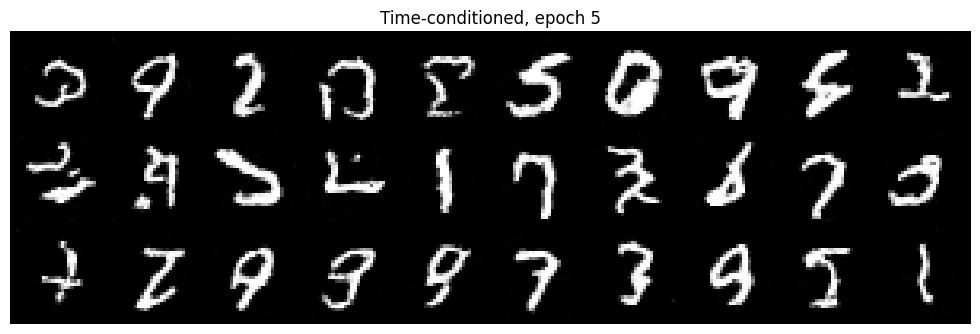
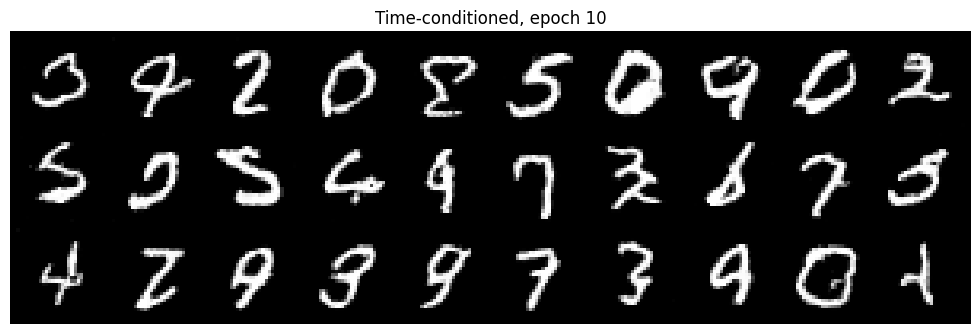
The first epoch does not have any meaningful forms. Epoch 5 starts to have some recognizable shapes, but many still cannot be identified whatsoever. Almost all the outputs at Epoch 10 are mostly identifiable for which unique digits, like a difficult CAPTCHA, but some of them are still hard to tell.
2.4 Adding Class-Conditioning to UNet
To choose the digit, two more FCBlocks take a one-hot label. 10% of the time during training we can drop the label. This gives room for the same network to give an unconditional prediction too. This is necessary for CFG.
2.5 Training the UNet
Training is the same as before, except each image comes with its label (which is dropped 10% of the time):
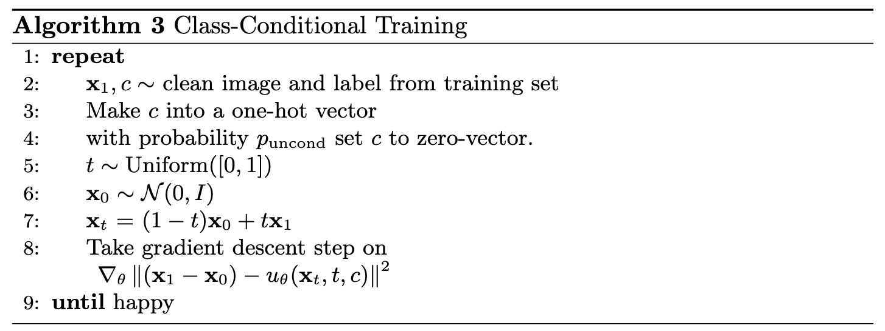
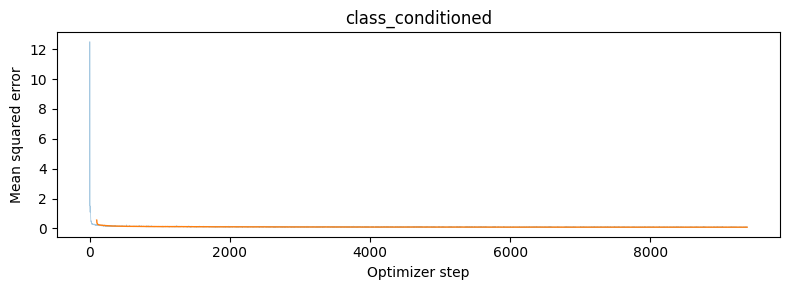
2.6 Sampling from the UNet
Sampling uses CFG with γ = 5 and 300 Euler steps, four samples per digit:
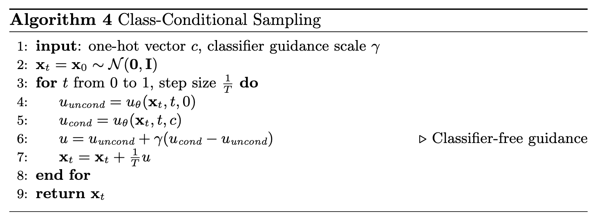
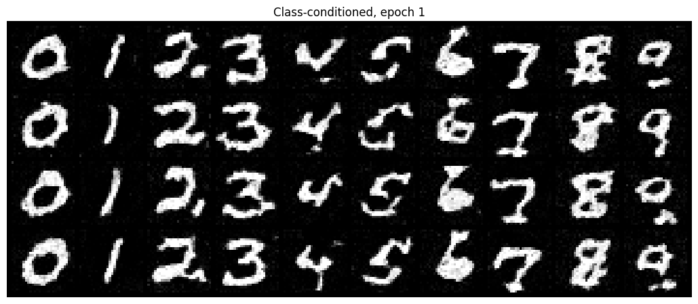
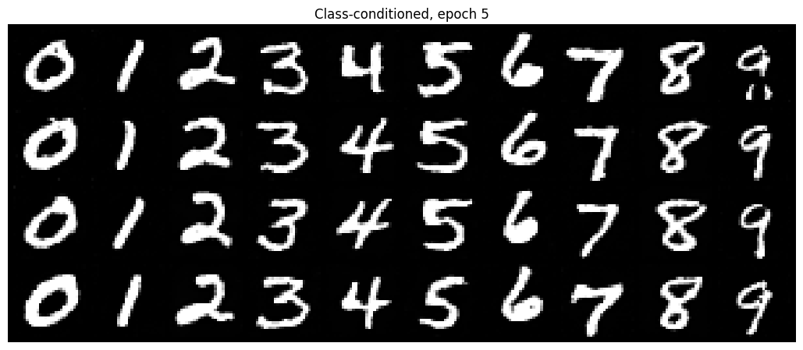
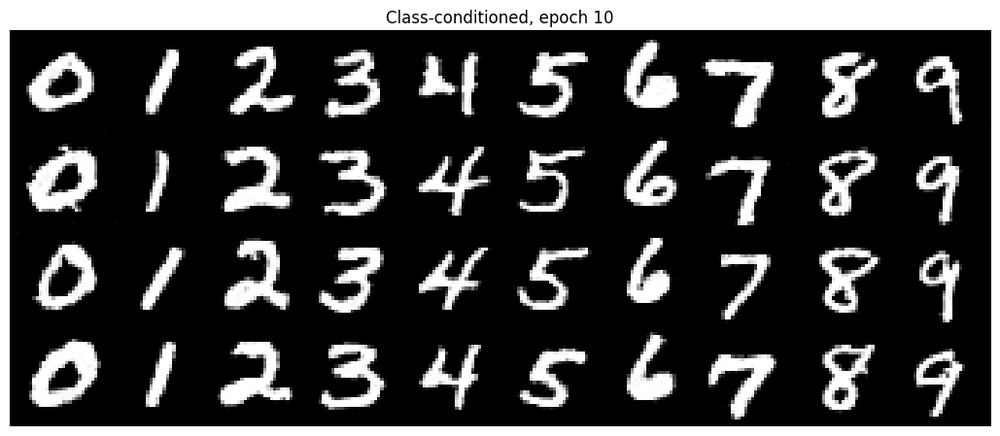
Knowing the digit helps a lot. They're readable after a single epoch and clean by epoch 10, which time-only conditioning never got close to.
Removing the Learning Rate Scheduler
For context, the scheduler starts the learning rate at 1e-2. As it runs down to the last epoch, it shrinks it to 1e-3. Essentially, training moves fast early and settles down at the end. To try to remove the learning rate scheduler, we can use the constant 1e-3 to have something small enough to end the training while not giving up performance. It's in the range of the original algorithm.
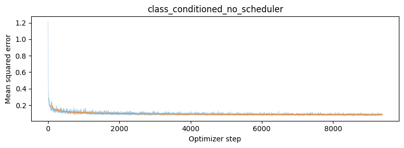
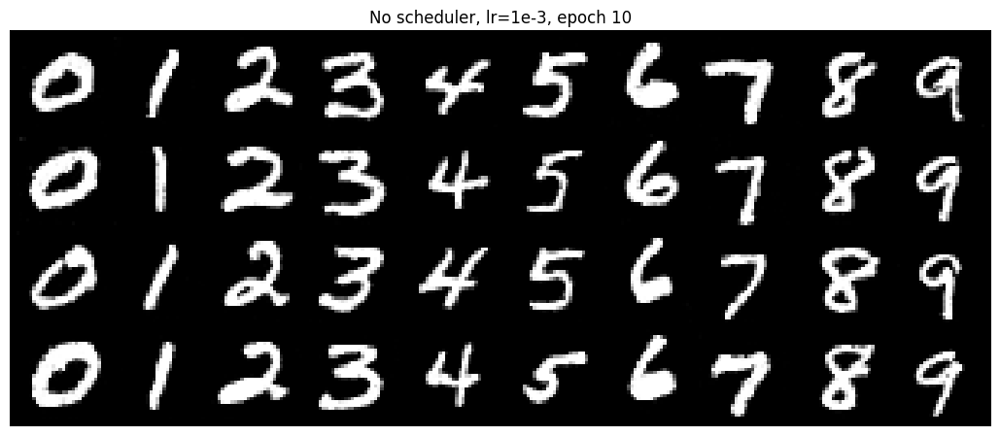
We can observe that the start of training is slower and noisier. However, the final outputs at epoch 10 are just as good as before.